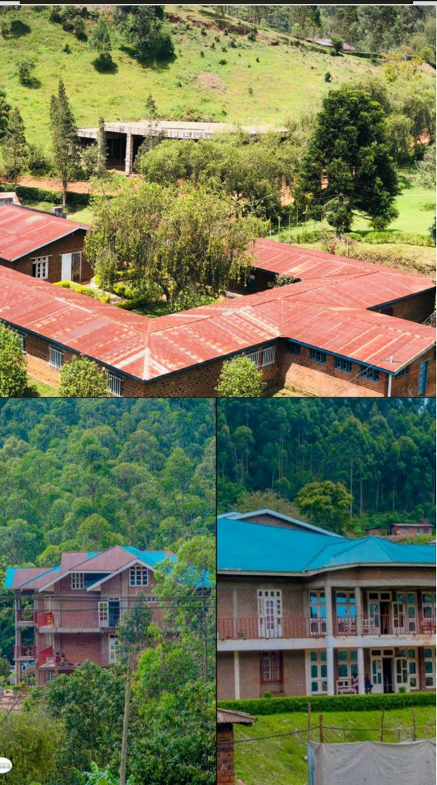
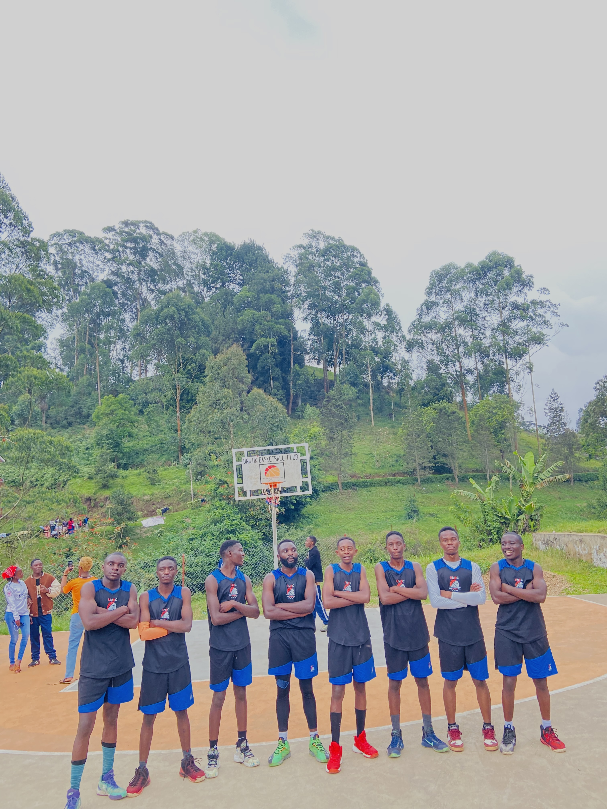
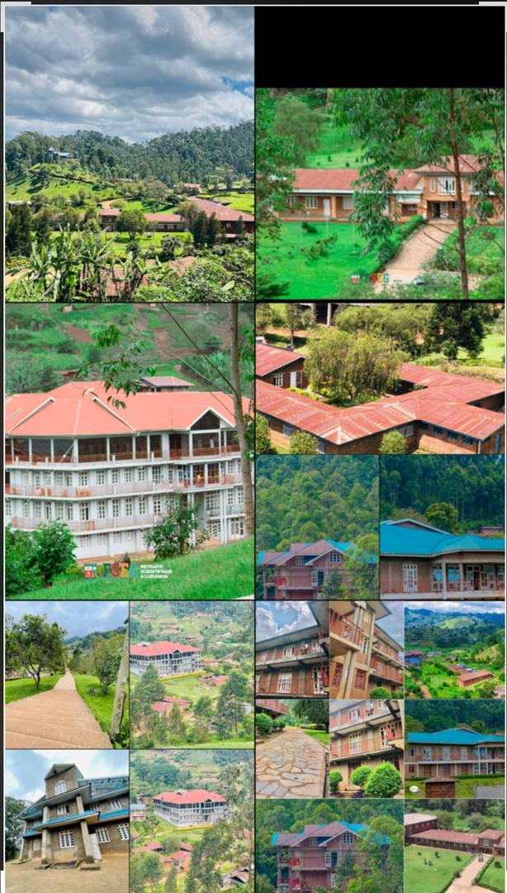
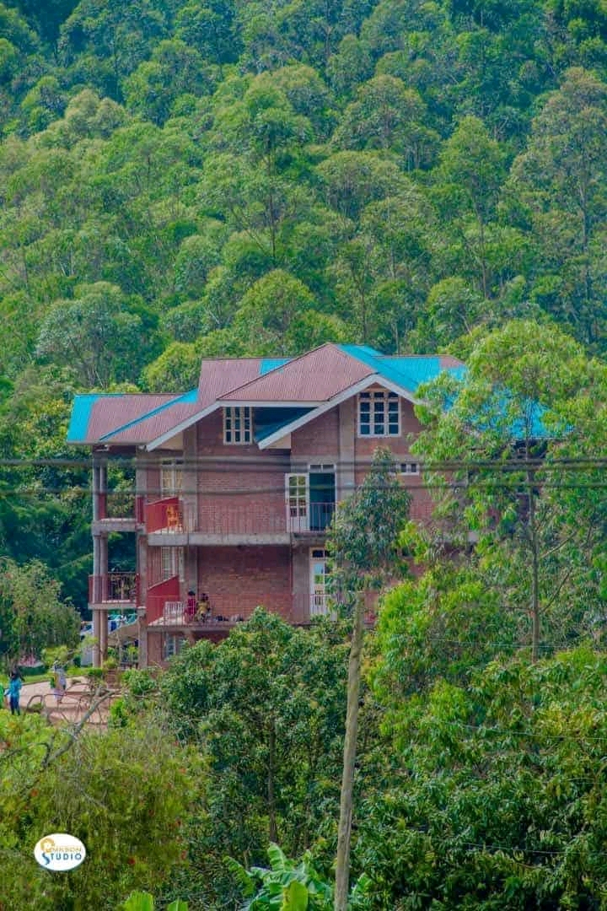
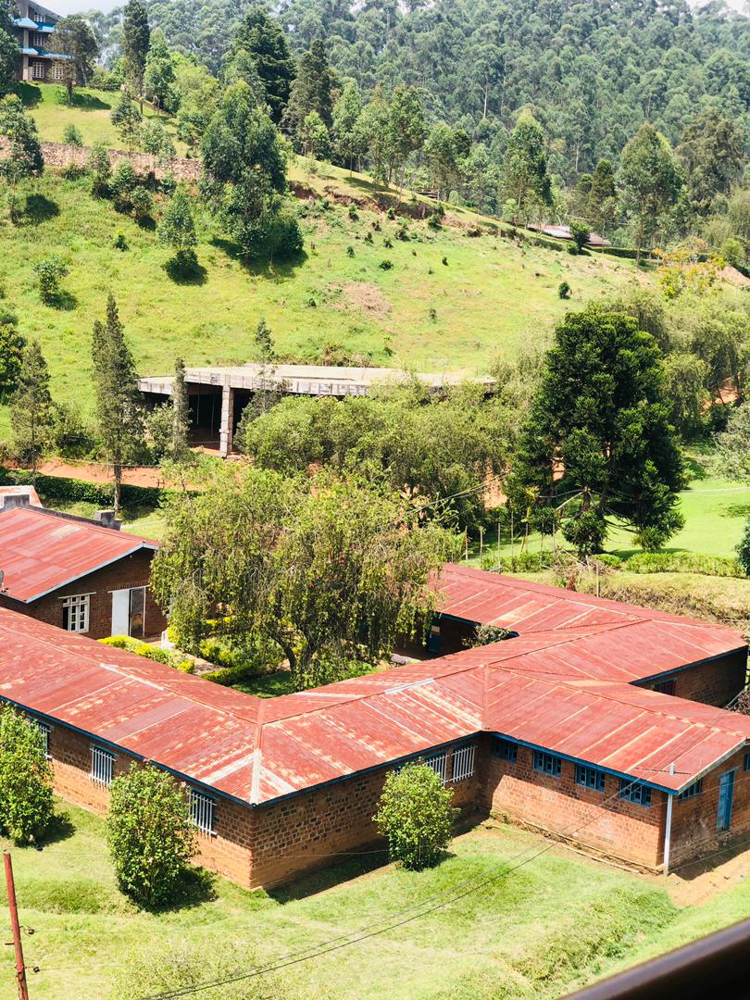
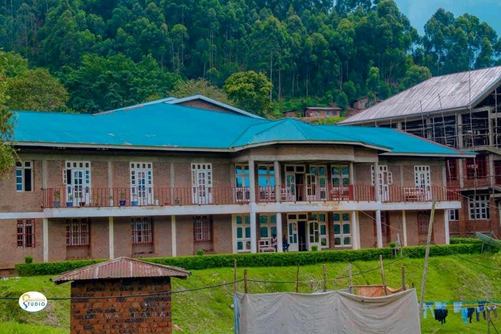
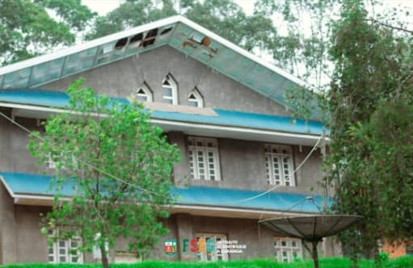
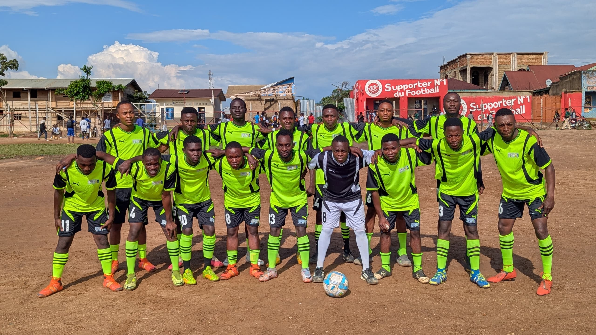

Vie au Campus
Vie spirituelle
Le campus offre une formation complète : intellectuelle, physique, morale et spirituelle.
Les étudiants participent aux cultes et activités spirituelles chaque semaine.
À Lukanga, les jeunes développent un esprit d’intégrité et de discipline.

Dortoirs
Le campus dispose de trois dortoirs, pensés pour offrir un cadre de vie agréable et propice à l’étude.
Plaza (Filles)
Un espace calme, adapté aux journées studieuses.
Homme (Garçons)
Une résidence dynamique, favorisant la discipline.
Atlanta (Garçons)
Une résidence confortable, proche des activités du campus.
- Dortoir fille Plaza
- Dortoir garçon Homme
- Dortoir garçon Atlanta

Sports et Loisirs
Le sport occupe une place importante : football, basketball, volleyball, tennis et footing.
L’université encourage aussi les activités culturelles et les loisirs pour renforcer la cohésion, la motivation et le sens du service.
- Esprit d’équipe et d$iscipline
- Activités régulières et matchs
- Équilibre entre études et bien-être
Galerie du Campus
Découvrez la vie étudiante en images.

Campus UNILUK
Vue générale du campus

Dortoir Plaza
Résidence des étudiantes

Dortoir Homme
Résidence des étudiants

Dortoir Atlanta
Résidence des étudiants semi interne

Église du campus
Vie spirituelle

Basketball
Activités sportives , matchs et compétitions

Football
Matchs et compétitions